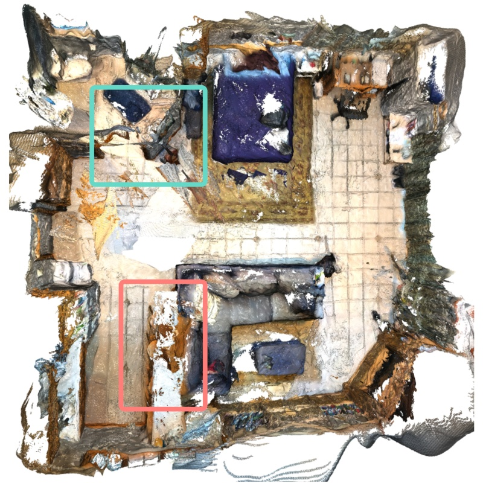
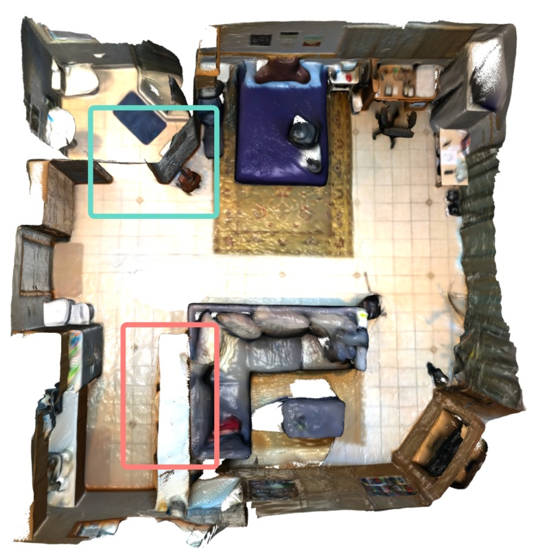
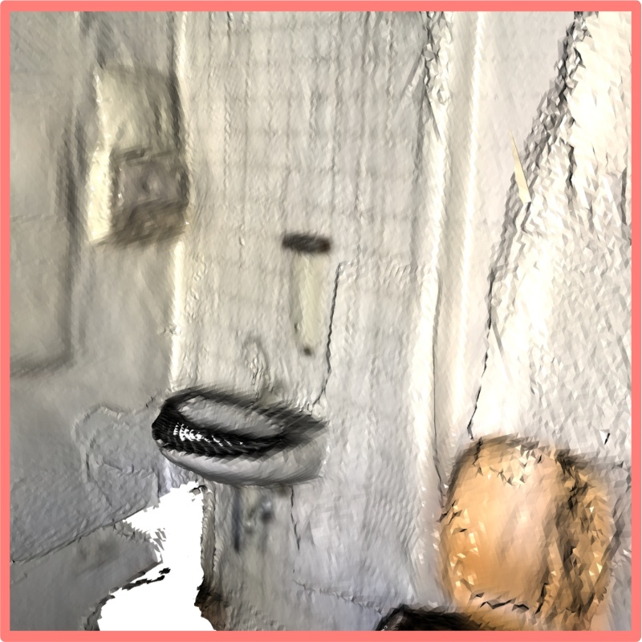
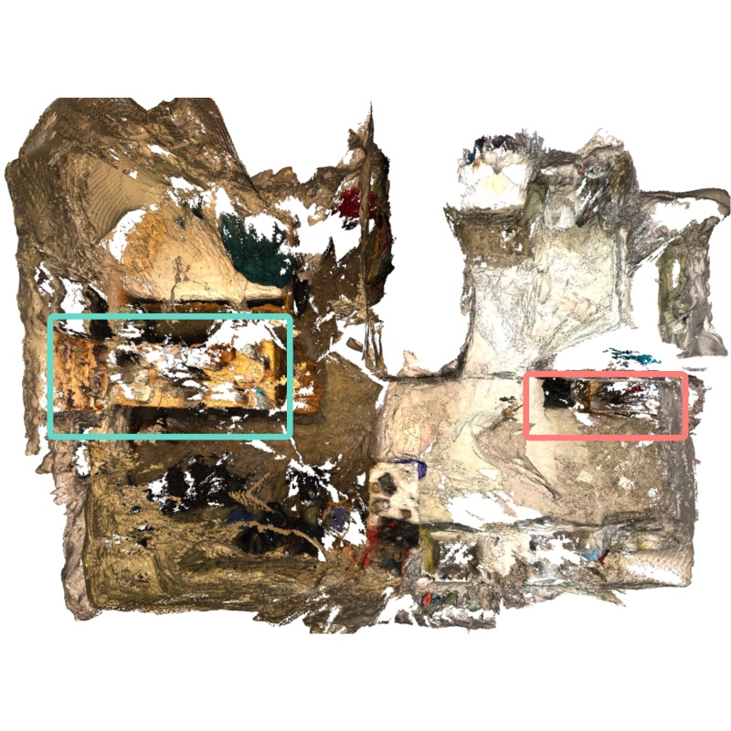
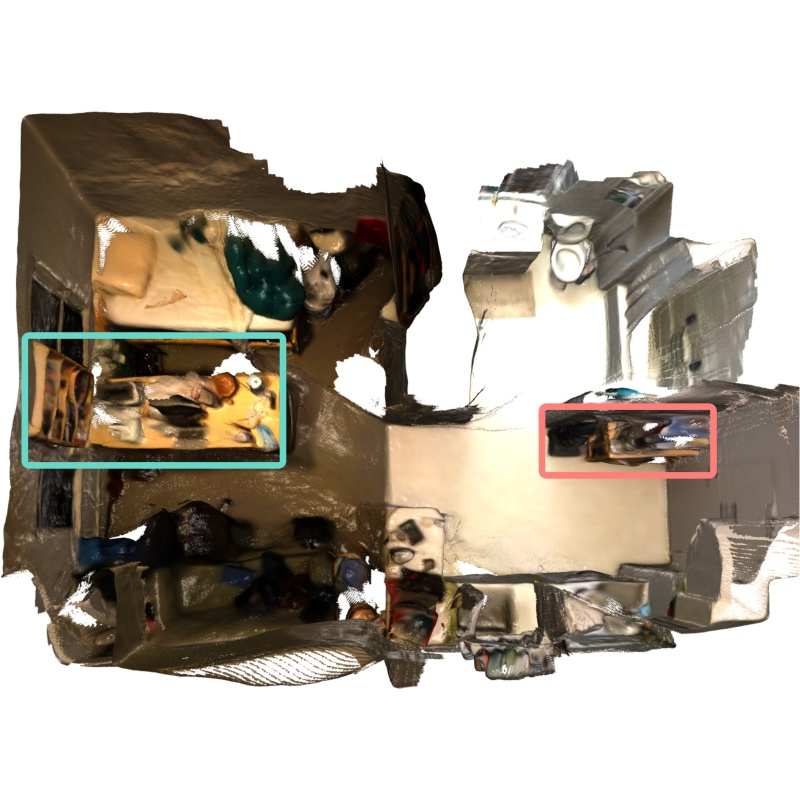

Results
Replica
HI-SLAM2 outperforms RGB-only and recent RGB-D methods in both geometry and appearance reconstruction.
Appearance Reconstruction
Geometry Reconstruction


ScanNet
Reconstruction on Scene0000


Reconstruction on Scene0106


Reconstruction on Scene0207


ScanNet++

BibTeX
@misc{zhang2024hislam2,
title={HI-SLAM2: Geometry-Aware Gaussian SLAM for Fast Monocular Scene Reconstruction},
author={Wei Zhang and Qing Cheng and David Skuddis and Niclas Zeller and Daniel Cremers and Norbert Haala},
year={2024},
eprint={2411.17982},
archivePrefix={arXiv},
primaryClass={cs.RO},
url={https://arxiv.org/abs/2411.17982},
}